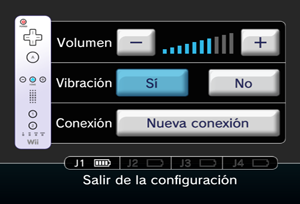

3 |
Preparación del control |
 |
La manera de sujetar el Wii Remote dependerá de si vas a usar solo el Wii Remote o de si lo harás usando también un control complementario.
Nota: Para saber cómo colocar la correa del Wii Remote y cómo conectar un control complementario, consulta el manual de operaciones de la consola Wii o el manual de instrucciones respectivo de cada control.
Este procedimiento te permitirá establecer la comunicación entre el Wii Remote y la consola Wii.
El Wii Remote incluido con esta consola Wii ya ha sido sincronizado con la misma.
Existen dos métodos para sincronizar un Wii Remote con la consola Wii.
MODO NORMAL: El modo normal de sincronización se utiliza para conectar controles adicionales a la consola Wii o para volver a sincronizar el Wii Remote incluido con la consola Wii. Una vez sincronizado, el Wii Remote permanecerá conectado a la consola Wii a menos que sobrescribas dicho ajuste al sincronizar el control con otra consola Wii diferente.
MODO ÚNICO: Este modo te permitirá usar el Wii Remote temporalmente con la consola Wii de un amigo, y que tus amigos puedan usar sus controles con tu consola Wii. No sobrescribirá el ajuste del modo normal guardado en el Wii Remote. En este modo, el Wii Remote solo se comunicará con la nueva consola Wii mientras esté encendida. Al apagarla, el control dejará de estar sincronizado con la consola Wii.
Nota: Solo un Wii Remote sincronizado en el modo normal puede encender o apagar la consola Wii.
Sincronización en modo normal
Nota: Asegúrate de que el Wii Remote tiene pilas.
Cuando se haya establecido la conexión, el indicador que señala el número del jugador se encenderá una vez. 
Debes seguir este procedimiento con cada Wii Remote adicional que conectes a la consola Wii.
Sincronización en el modo único
Nota: Este modo desactiva de forma temporal el ajuste de sincronización del modo normal para todos los controles de Wii hasta que se apaga la consola Wii. Cuando se vuelva a encender la consola Wii, se restaurará la configuración del modo normal.

IMPORTANTE: Si el Wii Remote pierde la sincronización con la consola Wii y no puedes volver a sincronizarlo, revisa el apartado “Solución de problemas” del manual de operaciones de la consola Wii.
Si se ha desviado la posición neutra* de alguna palanca del Classic Controller y no se puede controlar bien el juego, haz lo siguiente:
* La "posición neutra" de una palanca es aquella en la que la palanca no está inclinada. Si al encender la consola Wii estás inclinando sin darte cuenta la palanca, la consola Wii tomará como neutra la posición de la palanca en ese momento, lo que causará problemas de control durante el juego.
|


 |
 |
 |